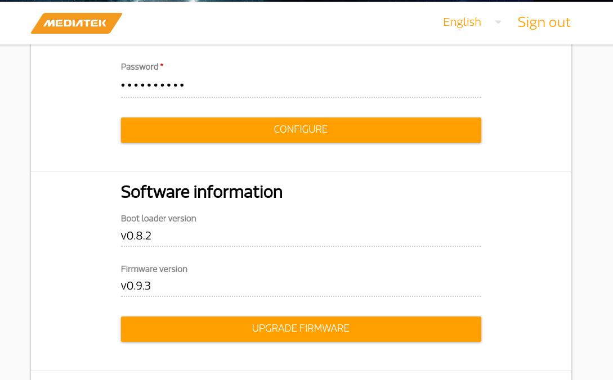

Burn Firmware
Factory reset 7688
- Power on the 7688 and wait a moment to ensure the bootup process is finished.
- Press the WiFi button for 20 seconds.
- Release the button and you will see the orange light, which means it starts to reset.
- After a few minutes, you can see the WiFi SSID LinkIt_Smart_7688_xxx broadcasted by your 7688.
For example:

Firmware and bootloader
Download the latest firmware from official website. https://labs.mediatek.com/site/global/developer_tools/mediatek_linkit_smart_7688/sdt_intro/index.gsp
There are two ways to update bootloader.
One is via Web UI.

Another way is via usb drive. Here is nice tutorial video.